6. Tallies¶
6.1. Filters and Scores¶
The tally capability in OpenMC takes a similar philosophy as that employed in the MC21 Monte Carlo code to give maximum flexibility in specifying tallies while still maintaining scalability. Any tally in a Monte Carlo simulation can be written in the following form:
(1)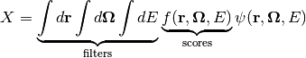
A user can specify one or more filters which identify which regions of phase
space should score to a given tally (the limits of integration as shown in
equation (1)) as well as the scoring function ( in
equation (1)). For example, if the desired tally was the
in
equation (1)). For example, if the desired tally was the
 reaction rate in a fuel pin, the filter would specify the
cell which contains the fuel pin and the scoring function would be the radiative
capture macroscopic cross section. The following quantities can be scored in
OpenMC: flux, total reaction rate, scattering reaction rate, neutron production
from scattering, higher scattering moments,
reaction rate in a fuel pin, the filter would specify the
cell which contains the fuel pin and the scoring function would be the radiative
capture macroscopic cross section. The following quantities can be scored in
OpenMC: flux, total reaction rate, scattering reaction rate, neutron production
from scattering, higher scattering moments,  reaction rates,
absorption reaction rate, fission reaction rate, neutron production rate from
fission, and surface currents. The following variables can be used as filters:
universe, material, cell, birth cell, surface, mesh, pre-collision energy, and
post-collision energy.
reaction rates,
absorption reaction rate, fission reaction rate, neutron production rate from
fission, and surface currents. The following variables can be used as filters:
universe, material, cell, birth cell, surface, mesh, pre-collision energy, and
post-collision energy.
With filters for pre- and post-collision energy and scoring functions for scattering and fission production, it is possible to use OpenMC to generate cross sections with user-defined group structures. These multigroup cross sections can subsequently be used in deterministic solvers such as coarse mesh finite difference (CMFD) diffusion.
6.2. Using Maps for Filter-Matching¶
Some Monte Carlo codes suffer severe performance penalties when tallying a large
number of quantities. Care must be taken to ensure that a tally system scales
well with the total number of tally bins. In OpenMC, a mapping technique is used
that allows for a fast determination of what tally/bin combinations need to be
scored to a given particle’s phase space coordinates. For each discrete filter
variable, a list is stored that contains the tally/bin combinations that could
be scored to for each value of the filter variable. If a particle is in cell
 , the mapping would identify what tally/bin combinations specify cell
for the cell filter variable. In this manner, it is not necessary to
check the phase space variables against each tally. Note that this technique
only applies to discrete filter variables and cannot be applied to energy
bins. For energy filters, it is necessary to perform a binary search on the
specified energy grid.
, the mapping would identify what tally/bin combinations specify cell
for the cell filter variable. In this manner, it is not necessary to
check the phase space variables against each tally. Note that this technique
only applies to discrete filter variables and cannot be applied to energy
bins. For energy filters, it is necessary to perform a binary search on the
specified energy grid.
6.3. Volume-Integrated Flux and Reaction Rates¶
One quantity we may wish to compute during the course of a Monte Carlo simulation is the flux or a reaction rate integrated over a finite volume. The volume may be a particular cell, a collection of cells, or the entire geometry. There are various methods by which we can estimate reaction rates
6.3.1. Analog Estimator¶
The analog estimator is the simplest type of estimator for reaction rates. The basic idea is that we simply count the number of actual reactions that take place and use that as our estimate for the reaction rate. This can be written mathematically as
(2)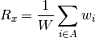
where 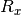 is the reaction rate for reaction  ,
,  denotes
an index for each event,
denotes
an index for each event,  is the set of all events resulting in
reaction , and
is the set of all events resulting in
reaction , and  is the total starting weight of the particles,
and
is the total starting weight of the particles,
and  is the pre-collision weight of the particle as it enters event
. One should note that equation (2) is
volume-integrated so if we want a volume-averaged quantity, we need to divided
by the volume of the region of integration. If survival biasing is employed, the
analog estimator cannot be used for any reactions with zero neutrons in the exit
channel.
is the pre-collision weight of the particle as it enters event
. One should note that equation (2) is
volume-integrated so if we want a volume-averaged quantity, we need to divided
by the volume of the region of integration. If survival biasing is employed, the
analog estimator cannot be used for any reactions with zero neutrons in the exit
channel.
6.3.2. Collision Estimator¶
While the analog estimator is conceptually very simple and easy to implement, it can suffer higher variance due to the fact low probability events will not occur often enough to get good statistics if they are being tallied. Thus, it is desirable to use a different estimator that allows us to score to the tally more often. One such estimator is the collision estimator. Instead of tallying a reaction only when it happens, the idea is to make a contribution to the tally at every collision.
We can start by writing a formula for the collision estimate of the flux. Since
 where
where  is the total reaction rate,
is the total reaction rate,
 is the total macroscopic cross section, and 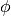 is the
scalar flux, it stands to reason that we can estimate the flux by taking an
estimate of the total reaction rate and dividing it by the total macroscopic
cross section. This gives us the following formula:
is the total macroscopic cross section, and 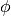 is the
scalar flux, it stands to reason that we can estimate the flux by taking an
estimate of the total reaction rate and dividing it by the total macroscopic
cross section. This gives us the following formula:
(3)
where is again the total starting weight of the particles,  is the set of all events resulting in a collision with a nucleus, and
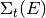 is the total macroscopic cross section of the target
material at the incoming energy of the particle 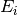.
is the set of all events resulting in a collision with a nucleus, and
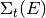 is the total macroscopic cross section of the target
material at the incoming energy of the particle 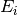.
If we multiply both sides of equation (3) by the
macroscopic cross section for some reaction , then we get the collision
estimate for the reaction rate for that reaction:
(4)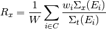
where  is the macroscopic cross section for reaction
at the incoming energy of the particle . In comparison to
equation (2), we see that the collision estimate will result
in a tally with a larger number of events that score to it with smaller
contributions (since we have multiplied it by
is the macroscopic cross section for reaction
at the incoming energy of the particle . In comparison to
equation (2), we see that the collision estimate will result
in a tally with a larger number of events that score to it with smaller
contributions (since we have multiplied it by  ).
).
6.3.3. Track-length Estimator¶
One other method we can use to increase the number of events that scores to tallies is to use an estimator the scores contributions to a tally at every track for the particle rather than every collision. This is known as a track-length estimator, sometimes also called a path-length estimator. We first start with an expression for the volume integrated flux, which can be written as
(5)
where  is the volume,
is the volume,  is the angular flux,
is the angular flux,
 is the position of the particle,
is the direction of the particle,
is the position of the particle,
is the direction of the particle,  is the energy of the particle, and
is the energy of the particle, and
 is the time. By noting that
is the time. By noting that  where is the angular neutron density, we can rewrite equation
(5) as
where is the angular neutron density, we can rewrite equation
(5) as
(6)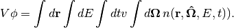
Using the relations 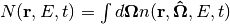 and  where
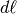 is the differential unit of track length, we then obtain
where
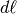 is the differential unit of track length, we then obtain
(7)
Equation (7) indicates that we can use the length of a particle’s trajectory as an estimate for the flux, i.e. the track-length estimator of the flux would be
(8)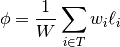
where  is the set of all the particle’s trajectories within the desired
volume and 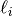 is the length of the -th trajectory. In the
same vein as equation (4), the track-length estimate of a
reaction rate is found by multiplying equation (8) by a
macroscopic reaction cross section:
is the set of all the particle’s trajectories within the desired
volume and 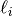 is the length of the -th trajectory. In the
same vein as equation (4), the track-length estimate of a
reaction rate is found by multiplying equation (8) by a
macroscopic reaction cross section:
(9)
One important fact to take into consideration is that the use of a track-length estimator precludes us from using any filter that requires knowledge of the particle’s state following a collision because by definition, it will not have had a collision at every event. Thus, for tallies with outgoing-energy filters (which require the post-collision energy) or for tallies of scattering moments (which require the scattering cosine), we must use an analog estimator.
6.4. Statistics¶
As was discussed briefly in Introduction, any given result from a Monte Carlo calculation, colloquially known as a “tally”, represents an estimate of the mean of some random variable of interest. This random variable typically corresponds to some physical quantity like a reaction rate, a net current across some surface, or the neutron flux in a region. Given that all tallies are produced by a stochastic process, there is an associated uncertainty with each value reported. It is important to understand how the uncertainty is calculated and what it tells us about our results. To that end, we will introduce a number of theorems and results from statistics that should shed some light on the interpretation of uncertainties.
6.4.1. Law of Large Numbers¶
The law of large numbers is an important statistical result that tells us
that the average value of the result a large number of repeated experiments
should be close to the expected value. Let 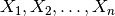 be an
infinite sequence of independent, identically-distributed random variables
with expected values  . One form of the law of large
numbers states that the sample mean
. One form of the law of large
numbers states that the sample mean  converges in probability to the true mean, i.e. for all
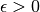
converges in probability to the true mean, i.e. for all
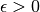

6.4.2. Central Limit Theorem¶
The central limit theorem (CLT) is perhaps the most well-known and ubiquitous
statistical theorem that has far-reaching implications across many
disciplines. The CLT is similar to the law of large numbers in that it tells us
the limiting behavior of the sample mean. Whereas the law of large numbers tells
us only that the value of the sample mean will converge to the expected value of
the distribution, the CLT says that the distribution of the sample mean will
converge to a normal distribution. As we defined before, let  be an infinite sequence of independent, identically-distributed
random variables with expected values
be an infinite sequence of independent, identically-distributed
random variables with expected values  and variances
and variances
 . Note that we don’t require that
these random variables take on any particular distribution – they can be
normal, log-normal, Weibull, etc. The central limit theorem states that as
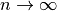, the random variable 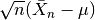 converges in distribution to the standard normal distribution:
. Note that we don’t require that
these random variables take on any particular distribution – they can be
normal, log-normal, Weibull, etc. The central limit theorem states that as
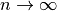, the random variable 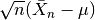 converges in distribution to the standard normal distribution:
(10)
6.4.3. Estimating Statistics of a Random Variable¶
6.4.3.1. Mean¶
Given independent samples drawn from a random variable, the sample mean is
simply an estimate of the average value of the random variable. In a Monte Carlo
simulation, the random variable represents physical quantities that we want
tallied. If  is the random variable with
is the random variable with  observations
observations
 , then an unbiased estimator for the population mean
is the sample mean, defined as
, then an unbiased estimator for the population mean
is the sample mean, defined as
(11)
6.4.3.2. Variance¶
The variance of a population indicates how spread out different members of the population are. For a Monte Carlo simulation, the variance of a tally is a measure of how precisely we know the tally value, with a lower variance indicating a higher precision. There are a few different estimators for the population variance. One of these is the second central moment of the distribution also known as the biased sample variance:
(12)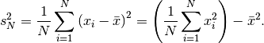
This estimator is biased because its expected value is actually not equal to the population variance:
(13)![E[s_N^2] = \frac{N - 1}{N} \sigma^2](../_images/math/61a4f1b9873d704b7cf45fbf468cb85ed94ab9e4.png)
where  is the actual population variance. As a result, this
estimator should not be used in practice. Instead, one can use Bessel’s
correction to come up with an unbiased sample variance estimator:
is the actual population variance. As a result, this
estimator should not be used in practice. Instead, one can use Bessel’s
correction to come up with an unbiased sample variance estimator:
(14)
This is the estimator normally used to calculate sample variance. The final form in equation (14) is especially suitable for computation since we do not need to store the values at every realization of the random variable as the simulation proceeds. Instead, we can simply keep a running sum and sum of squares of the values at each realization of the random variable and use that to calculate the variance.
6.4.3.3. Variance of the Mean¶
The previous sections discussed how to estimate the mean and variance of a random variable using statistics on a finite sample. However, we are generally not interested in the variance of the random variable itself; we are more interested in the variance of the estimated mean. The sample mean is the result of our simulation, and the variance of the sample mean will tell us how confident we should be in our answers.
Fortunately, it is quite easy to estimate the variance of the mean if we are able to estimate the variance of the random variable. We start with the observation that if we have a series of uncorrelated random variables, we can write the variance of their sum as the sum of their variances:
(15)
This result is known as the Bienaymé formula. We can use this result to determine a formula for the variance of the sample mean. Assuming that the realizations of our random variable are again identical, independently-distributed samples, then we have that
(16)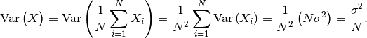
We can combine this result with equation (14) to come up with an unbiased estimator for the variance of the sample mean:
(17)
At this point, an important distinction should be made between the estimator for the variance of the population and the estimator for the variance of the mean. As the number of realizations increases, the estimated variance of the population based on equation (14) will tend to the true population variance. On the other hand, the estimated variance of the mean will tend to zero as the number of realizations increases. A practical interpretation of this is that the longer you run a simulation, the better you know your results. Therefore, by running a simulation long enough, it is possible to reduce the stochastic uncertainty to arbitrarily low levels.
6.4.3.4. Confidence Intervals¶
While the sample variance and standard deviation gives us some idea about the variability of the estimate of the mean of whatever quantities we’ve tallied, it does not help us interpret how confidence we should be in the results. To quantity the reliability of our estimates, we can use confidence intervals based on the calculated sample variance.
A  confidence interval for a population parameter is defined as
such: if we repeat the same experiment many times and calculate the confidence
interval for each experiment, then percent of the calculated
intervals would encompass the true population parameter. Let
confidence interval for a population parameter is defined as
such: if we repeat the same experiment many times and calculate the confidence
interval for each experiment, then percent of the calculated
intervals would encompass the true population parameter. Let  be samples from a set of independent, identically-distributed random
variables each with population mean
be samples from a set of independent, identically-distributed random
variables each with population mean  and variance
. The t-statistic is defined as
and variance
. The t-statistic is defined as
(18)
where  is the sample mean from equation (11) and
is the sample mean from equation (11) and
 is the standard deviation based on equation
(14). If the random variables 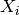 are
normally-distributed, then the t-statistic has a Student’s t-distribution
with 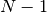 degrees of freedom. This implies that
is the standard deviation based on equation
(14). If the random variables 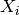 are
normally-distributed, then the t-statistic has a Student’s t-distribution
with 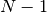 degrees of freedom. This implies that
(19)
where 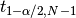 is the  percentile of a
t-distribution with degrees of freedom. Thus, the
two sided confidence interval for the sample mean is
percentile of a
t-distribution with degrees of freedom. Thus, the
two sided confidence interval for the sample mean is
(20)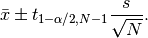
One should be cautioned that equation (20) only applies if the underlying random variables are normally-distributed. In general, this may not be true for a tally random variable — the central limit theorem guarantees only that the sample mean is normally distributed, not the underlying random variable. If batching is used, then the underlying random variable, which would then be the averages from each batch, will be normally distributed as long as the conditions of the central limit theorem are met.
Let us now outline the method used to calculate the percentile of the Student’s t-distribution. For one or two degrees of freedom, the percentile can be written analytically. For one degree of freedom, the t-distribution becomes a standard Cauchy distribution whose cumulative distribution function is
(21)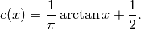
Thus, inverting the cumulative distribution function, we find the
percentile of the standard Cauchy distribution to be
(22)
For two degrees of freedom, the cumulative distribution function is the second-degree polynomial
(23)
Solving for , we find the percentile to be
(24)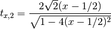
For degrees of freedom greater than two, it is not possible to obtain an analytical formula for the inverse of the cumulative distribution function. We must resort to either numerically solving for the inverse or to an approximation. Approximations for percentiles of the t-distribution have been found with high levels of accuracy. OpenMC uses the approximation from [George]:
(25)
where 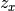 is the percentile of the standard normal
distribution. In order to determine an arbitrary percentile of the standard
normal distribution, we use an unpublished rational approximation. After
using the rational approximation, one iteration of Newton’s method is applied to
improve the estimate of the percentile.
References
| [George] | E. E. Olusegun George and Meenakshi Sivaram, “A modification of the Fisher-Cornish approximation for the student t percentiles,” Communication in Statistics - Simulation and Computation, 16 (4), pp. 1123-1132 (1987). |